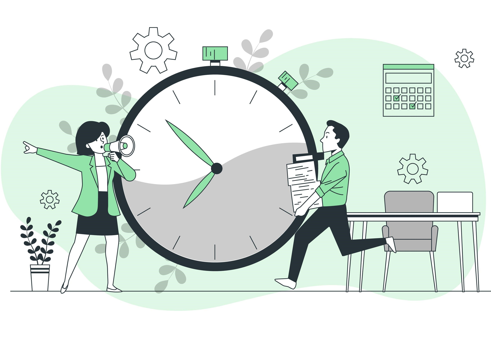

Time & Work
The time and work is the basis of how work gets done at a particular time. The problems with time and work give us the exact relationship between those who are working and the number of days and time it takes to fulfill the work
Things to keep in Mind :
- The relation between Work & Person is directly proportional
- The relation between Time and work is directly proportional
- The relation between Time & Person is Inversely proportional
- Work completed is always regarded as being equal to 1
In the context of work and time problems, the formulas involve calculating the amount of work done or the time taken to complete a task, often when multiple workers are involved. Here are some common formulas used in work and time calculations :
- Work Formula : Work (W) is calculated as the product of the rate of work (R) and the time (T) taken to complete the task:W=R×T
- Rate of Work Formula : The rate of work (R) is the amount of work done per unit of time:R=TW
- Time Formula : The time (T) required to complete a task is calculated by dividing the work (W) by the rate of work (R):T=RW
